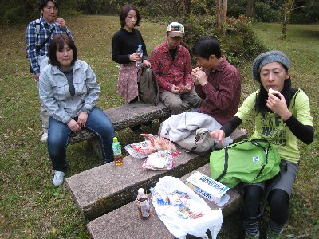
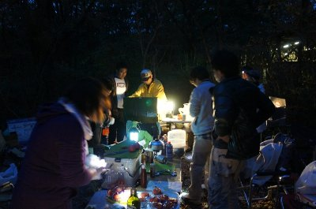
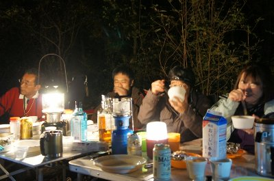
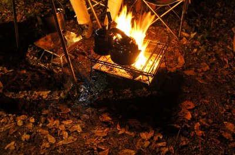
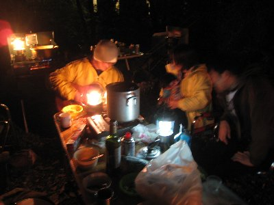
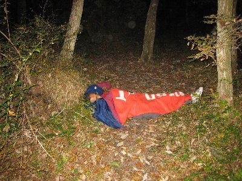
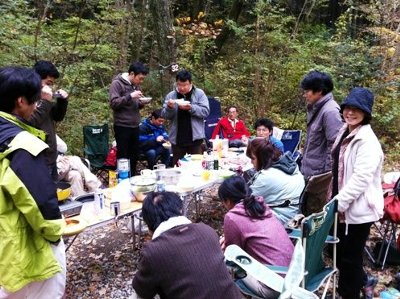

秋キャンプ | 2010年11月 幹事：いづみ |
|---|---|
| 今年の秋キャンプは、春にハイキングに出かけた「丸火自然公園」です。 春に行った時、新緑が綺麗で「ここなら紅葉も綺麗だろう」ということ、キャンプ場もあるので秋キャンプはここに決定！って決まりました。 当日は、富士市吉原商店街名物の「つけナポリタン」を昼食に頂いてから現地入り。ちなみに、今回のつけナポリタンは、あの「アドニス」です。こってりに見えて以外にあっさり。前回のソファリとは、また違った味わいです。美味しかった♪ | |
 公園内を散策中 |  ちょっと休憩 |
| 現地入りして、大荷物をテント場へ運び、テントを設営して、軽い散策に出かけました。 問題の紅葉ですが、微妙に染まらないで枯れた風に見えるものもありましたが、なんとなく黄色かったり赤かったりと、それなりに紅葉化してました。なんとも微妙な表現ですが・・・先月に綺麗な紅葉見ちゃったからな〜 ここは心地よい風が吹き、風に揺れる葉の音を聴き、木々に囲まれた感じ、とっても気持ちが良いですね〜。公園だけど、変な整備がされていなくて、自然の中にいるって感じが素敵です。マッタリとした時間を過ごすには最適です。 そんな素敵な気分を味わいながら散策していると、ロープを滑車で滑りおりているのを発見。木々の間にロープが張ってあり、そこを滑車付きのロープでターザンの様に移動するっていうアレです。本来は設置されていないけど、学校の課外授業なのか子供たちが大勢いて、その子達用に今日だけ作ってあるみたいです。 もうみんな、やりたくてウズウズして周辺をウロウロ、子供たちが終わるのを待ってました。そしてお願いしてやらせてもらうことに。 みんな童心に帰り（いつでも童心な気がするが）ターザン遊びを満喫。最後にロープから足が抜けなくなる笑いを取る場面もありましたが、みな満足！ 笑いながらキャンプ地へ戻りました。 | |
|  夕食準備中 |  焼きトマトのピザ風 |
| キャンプ地では、留守番の二人組が焼酎を飲み始め、ちょっとほろ酔い状態。では、夕食の準備に入りましょう〜 本日のメニューは、鍋２種 海鮮ちゃんこ鍋 カレーもつ煮込み、和風スタッフドチキン、焼きトマトのピザ風♪ 今回はヨネさんという、強いコック長がおります。なんと図付きレシピまで作ってきて（ちゃんとラミネートされているところがニクい！）本格的です。それぞれのパートに分かれて料理開始。 日が沈み、夜の帳が下りる頃に、順次料理が完成！（なるべく時間と手間がかからないレシピをチョイスしてくれたヨネさんに感謝）周りは暗いけど、まだ17時過ぎ位。 | |
|  ランタンの明かりって良いね |  もちろん焚き火もね |
| 早速、ビールで乾杯しながら（実はその前から飲んでいたが）焼きトマトのピザ風を頂きます。 美味しぃ〜。なんて素敵なんだ♪ 焚き火とランタンの明かり。テーブルとイスでくつろぎ、各種のお酒と食べ物。なんて贅沢だろう。11月の空だが、底冷えすることもなく心地よい。 遅れてRyuuさんが到着。今週末は、西湖にてレースが行われているのに来てくれました。お土産持って。あ、最後にシラスと桜エビ、私が美味しく頂きました♪ ヨネさんがギターを持ち出し弾き語り。その横で酔っているのか、パーカッションを踊る様に叩くえいさん。周りに他のキャンパー居ないので騒ぎ放題。かなり眠いのか、そのまま道端で寝るサムちゃん。 深夜まで楽しく騒ぎました。 | |
|  ブレてるけどギター弾き語り中 |  道ばたで就寝 |
| 翌朝、朝から参加のYottaくんと、早起きサムちゃんが寝起きをお出迎え。Yottaくんは手作りパウンドケーキを持参してくれまました。 朝食はホットドックとクラムチャウダー。ちょっと炙りすぎたか、一部のパンに大きめの焦げ目が入りましたが、美味しく頂きました。途中からかむいさんも参加。忙しい中ありがとう。 朝食後というか、食べ終わってもおしゃべりが続き、木漏れ日のなかマッタリとした時間がとれました。 帰りにスーパー銭湯で汗を流し、昼食を取って帰宅。 いや〜、マッタリタイム、いいですね。忙しい生活の中での、このような時間は大切です。 | |
|  朝食風景 |  ホットドックを焼いてます |
| 写真：ヨネ＋波平＋べっしー、コメント：べっしー | |